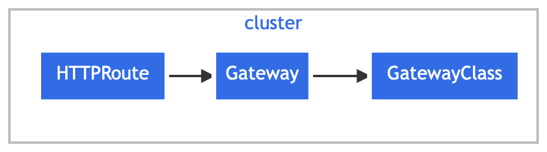
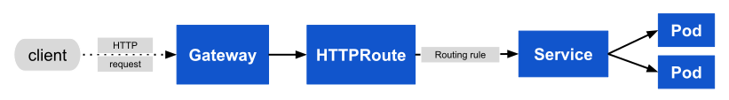

Make network services available by using an extensible, role-oriented, protocol-aware configuration mechanism. Gateway API is an add-on containing API kinds that provide dynamic infrastructure provisioning and advanced traffic routing.
Design principles
The following principles shaped the design and architecture of Gateway API:
- Role-oriented: Gateway API kinds are modeled after
organizational roles that are responsible for managing Kubernetes
service networking:
- Infrastructure Provider: Manages infrastructure that allows multiple isolated clusters to serve multiple tenants, e.g. a cloud provider.
- Cluster Operator: Manages clusters and is typically concerned with policies, network access, application permissions, etc.
- Application Developer: Manages an application running in a cluster and is typically concerned with application-level configuration and Service composition.
- Portable: Gateway API specifications are defined as custom resources and are supported by many implementations.
- Expressive: Gateway API kinds support functionality for common traffic routing use cases such as header-based matching, traffic weighting, and others that were only possible in Ingress by using custom annotations.
- Extensible: Gateway allows for custom resources to be linked at various layers of the API. This makes granular customization possible at the appropriate places within the API structure.
Resource model
Gateway API has four stable API kinds:
GatewayClass: Defines a set of gateways with common configuration and managed by a controller that implements the class.
Gateway: Defines an instance of traffic handling infrastructure, such as cloud load balancer.
HTTPRoute: Defines HTTP-specific rules for mapping traffic from a Gateway listener to a representation of backend network endpoints. These endpoints are often represented as a Service.
GRPCRoute: Defines gRPC-specific rules for mapping traffic from a Gateway listener to a representation of backend network endpoints. These endpoints are often represented as a Service.
Gateway API is organized into different API kinds that have
interdependent relationships to support the role-oriented nature of
organizations. A Gateway object is associated with exactly one
GatewayClass; the GatewayClass describes the gateway controller
responsible for managing Gateways of this class. One or more route kinds
such as HTTPRoute, are then associated to Gateways. A Gateway can filter
the routes that may be attached to its listeners, forming a
bidirectional trust model with routes.
The following figure illustrates the relationships of the three stable Gateway API kinds:

GatewayClass
Gateways can be implemented by different controllers, often with different configurations. A Gateway must reference a GatewayClass that contains the name of the controller that implements the class.
A minimal GatewayClass example:
apiVersion: gateway.networking.k8s.io/v1
kind: GatewayClass
metadata:
name: example-class
spec:
controllerName: example.com/gateway-controllerIn this example, a controller that has implemented Gateway API is
configured to manage GatewayClasses with the controller name
example.com/gateway-controller. Gateways of this class will
be managed by the implementation's controller.
See the GatewayClass reference for a full definition of this API kind.
Gateway
A Gateway describes an instance of traffic handling infrastructure. It defines a network endpoint that can be used for processing traffic, i.e. filtering, balancing, splitting, etc. for backends such as a Service. For example, a Gateway may represent a cloud load balancer or an in-cluster proxy server that is configured to accept HTTP traffic.
A typical Gateway resource example:
apiVersion: gateway.networking.k8s.io/v1
kind: Gateway
metadata:
name: example-gateway
namespace: example-namespace
spec:
gatewayClassName: example-class
listeners:
- name: http
protocol: HTTP
port: 80
hostname: "www.example.com"
allowedRoutes:
namespaces:
from: SameIn this example, an instance of traffic handling infrastructure is
programmed to listen for HTTP traffic on port 80. Since the
addresses field is unspecified, an address or hostname is
assigned to the Gateway by the implementation's controller. This address
is used as a network endpoint for processing traffic of backend network
endpoints defined in routes.
See the Gateway reference for a full definition of this API kind. For guidance on configuring HTTPS/TLS listeners, see the Gateway API TLS Guide.
Note:
By default, a Gateway only accepts Routes from the same namespace.
Cross-namespace Routes require configuring
allowedRoutes.
HTTPRoute
The HTTPRoute kind specifies routing behavior of HTTP requests from a Gateway listener to backend network endpoints. For a Service backend, an implementation may represent the backend network endpoint as a Service IP or the backing EndpointSlices of the Service. An HTTPRoute represents configuration that is applied to the underlying Gateway implementation. For example, defining a new HTTPRoute may result in configuring additional traffic routes in a cloud load balancer or in-cluster proxy server.
A typical HTTPRoute example:
apiVersion: gateway.networking.k8s.io/v1
kind: HTTPRoute
metadata:
name: example-httproute
spec:
parentRefs:
- name: example-gateway
hostnames:
- "www.example.com"
rules:
- matches:
- path:
type: PathPrefix
value: /login
backendRefs:
- name: example-svc
port: 8080In this example, HTTP traffic from Gateway
example-gateway with the Host: header set to
www.example.com and the request path specified as
/login will be routed to Service example-svc
on port 8080.
See the HTTPRoute reference for a full definition of this API kind.
GRPCRoute
The GRPCRoute kind specifies routing behavior of gRPC requests from a Gateway listener to backend network endpoints. For a Service backend, an implementation may represent the backend network endpoint as a Service IP or the backing EndpointSlices of the Service. A GRPCRoute represents configuration that is applied to the underlying Gateway implementation. For example, defining a new GRPCRoute may result in configuring additional traffic routes in a cloud load balancer or in-cluster proxy server.
Gateways supporting GRPCRoute are required to support HTTP/2 without an initial upgrade from HTTP/1, so gRPC traffic is guaranteed to flow properly.
A typical GRPCRoute example:
apiVersion: gateway.networking.k8s.io/v1
kind: GRPCRoute
metadata:
name: example-grpcroute
spec:
parentRefs:
- name: example-gateway
hostnames:
- "svc.example.com"
rules:
- backendRefs:
- name: example-svc
port: 50051In this example, gRPC traffic from Gateway
example-gateway with the host set to
svc.example.com will be directed to the service
example-svc on port 50051 from the same
namespace.
GRPCRoute allows matching specific gRPC services, as per the following example:
apiVersion: gateway.networking.k8s.io/v1
kind: GRPCRoute
metadata:
name: example-grpcroute
spec:
parentRefs:
- name: example-gateway
hostnames:
- "svc.example.com"
rules:
- matches:
- method:
service: com.example
method: Login
backendRefs:
- name: foo-svc
port: 50051In this case, the GRPCRoute will match any traffic for svc.example.com and apply its routing rules to forward the traffic to the correct backend. Since there is only one match specified,only requests for the com.example.User.Login method to svc.example.com will be forwarded. RPCs of any other method` will not be matched by this Route.
See the GRPCRoute reference for a full definition of this API kind.
Request flow
Here is a simple example of HTTP traffic being routed to a Service by using a Gateway and an HTTPRoute:

In this example, the request flow for a Gateway implemented as a reverse proxy is:
- The client starts to prepare an HTTP request for the URL
http://www.example.com - The client's DNS resolver queries for the destination name and learns a mapping to one or more IP addresses associated with the Gateway.
- The client sends a request to the Gateway IP address; the reverse proxy receives the HTTP request and uses the Host: header to match a configuration that was derived from the Gateway and attached HTTPRoute.
- Optionally, the reverse proxy can perform request header and/or path matching based on match rules of the HTTPRoute.
- Optionally, the reverse proxy can modify the request; for example, to add or remove headers, based on filter rules of the HTTPRoute.
- Lastly, the reverse proxy forwards the request to one or more backends.
Conformance
Gateway API covers a broad set of features and is widely implemented. This combination requires clear conformance definitions and tests to ensure that the API provides a consistent experience wherever it is used.
See the conformance documentation to understand details such as release channels, support levels, and running conformance tests.
Migrating from Ingress
Gateway API is the successor to the Ingress API. However, it does not include the Ingress kind. As a result, a one-time conversion from your existing Ingress resources to Gateway API resources is necessary.
Refer to the ingress migration guide for details on migrating Ingress resources to Gateway API resources.
What's next
Instead of Gateway API resources being natively implemented by Kubernetes, the specifications are defined as Custom Resources supported by a wide range of implementations. Install the Gateway API CRDs or follow the installation instructions of your selected implementation. After installing an implementation, use the Getting Started guide to help you quickly start working with Gateway API.
Note:
Make sure to review the documentation of your selected implementation to understand any caveats.
Refer to the API specification for additional details of all Gateway API kinds.